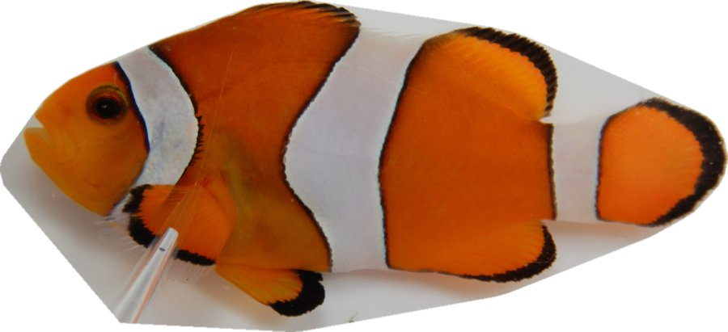
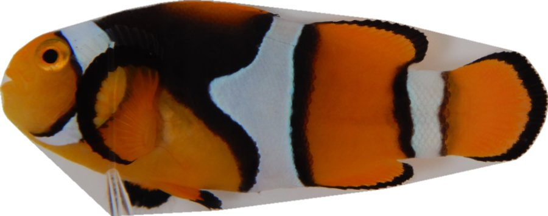
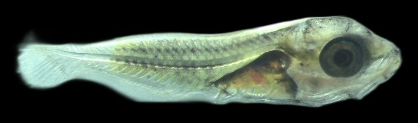
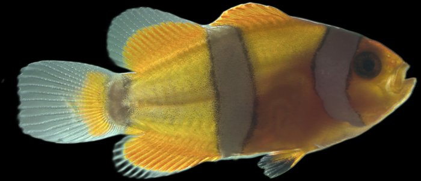
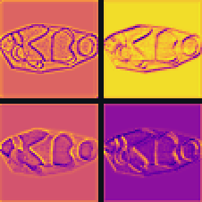

DEEPFIN: how an AI sorts clownfish
DEEPFIN is an AI that sorts photos of fish without ever being told what is in them. Pick where to start:


Can you beat DEEPFIN?
Two look-alike clownfish species. Can you tell Percula from Ocellaris better than the AI?
Play the species quiz →


Staging Amphiprion ocellaris
Baby clownfish grow through seven stages. Can you stage them, and can you do it faster than the AI?
Play the staging quiz →

Build a classifier without training data
Follow a photo through a real neural network, then build your own fish classifier from its scores.
Start →
From the study DEEPFIN, iScience (2026).